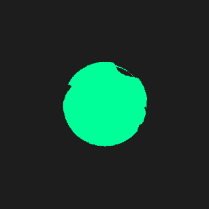

ABOUT ME

Welcome, Im Isaac and i'm an Apprentice Junior Developer currently employed by N Brown but training with Codenation.
Personally, technology has always been a keen interest of mine. From buying little robot building kits as a kid, to building my first gaming PC, I am still proud to not have grown out of my borderline obsession with coding and technology to this day.
I have always loved the creative side of development, encompassing the creative ability of an artist but with the technical knowledge to bring your creation to life for you and others to enjoy universally.
It is impossible to go out anywhere without encountering and using technology, we have wove it into almost every aspect of society and will continue to do so. This just encourages my passion for it even more.